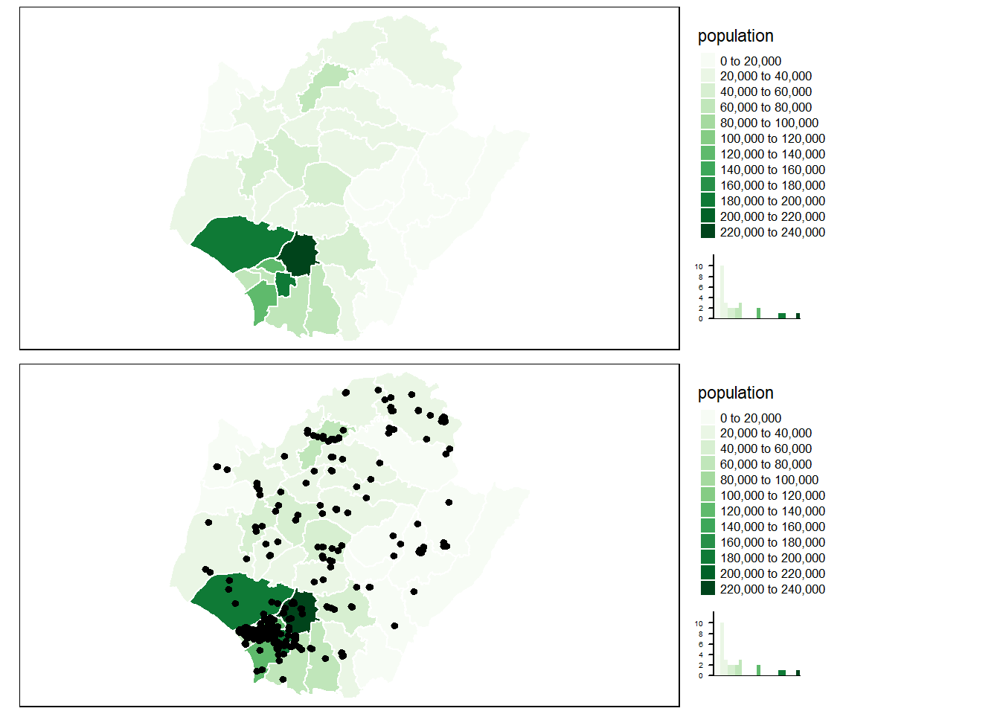

第 6 章 R 實作
library(tmap)
library(tidyverse)
library(rgdal)
library(maptools)
sf_taiwan_town <- sf::read_sf("C:/Users/ChenWenRu/OneDrive - 國立成功大學 National Cheng Kung University/R_Project/Spatial Analysis/mapdata202104280245\\TOWN_MOI_1100415.shp")
sf_tainan_pop <- read.csv("Tainan_pop.csv", fileEncoding = "Big5")
colnames(sf_tainan_pop) <- c("TOWNNAME", "population","male_pop","female_pop" )
sf_Tainan_town <- sf_taiwan_town %>% filter(COUNTYNAME == "臺南市")
sf_Tainan_town <- left_join(sf_Tainan_town,sf_tainan_pop[,c(1,2)])
# 讀旅館資料
sf_hotel <-sf::read_sf("C:/Users/ChenWenRu/OneDrive - 國立成功大學 National Cheng Kung University/R_Project/Spatial Analysis/Hotel_E_f\\Hotel_E_f.shp")
sf_hotel_Tainan <- (sf_hotel %>% subset(Region == "Tainan City"))map_tainan <- tm_shape(sf_Tainan_town) + tm_polygons(col="population", n = 10, border.col = "white", palette = "Greens",legend.hist = TRUE)+ # n: 幾個級距 ; 可在裡面加上 breaks = c(0, 23000, 27000, 100000 ) 照裡面的數字分級; legend.hist 長條圖
tm_legend(outside = T) #legend 是否在外面
map_tainan_hotel <- map_tainan+
tm_shape(sf_hotel_Tainan) + # 加上旅館個數的點點
tm_dots(size= .1, col ="black")
tmap_arrange(map_tainan, map_tainan_hotel, ncol = 1)
看上面的圖，其實蠻明顯可以看到有群聚的現象，那我們來進行一下檢定，身為一個不是很稱職的統計所研究生，所有的檢定最重要的是什麼，不是p-value，是檢定假設。
其實這裡說一個小觀念，大部分的檢定想要的就是打破虛無假設，確定對立假設是顯著成立的，所以基本上不知道虛無對立假設要怎麼放的時候，通常把想要得到的結果放在對立假設不會錯(還是有些例外，例如檢定常態S-W檢定)
6.0.1 樣方分析(Quadrat analysis)
用不同的方法讀取資料
library(spatstat)
library(rgdal)
library(rater)
library(maptools)
y <- readShapeSpatial("Hotel_E_f\\Hotel_E_f.shp")
class(y)## [1] "SpatialPointsDataFrame"
## attr(,"package")
## [1] "sp"變成可以做樣方分析的ppp：
ppp_hotel_Tainan <- as(y, "ppp")
class(ppp_hotel_Tainan)## [1] "ppp"6.0.2 卡方檢定：
\[ \begin{cases} H_0: 旅館隨機分布(服從poisson分配)\ ;\\ H_1: 旅館不為隨機分布(不服從poisson分配) \end{cases} \]
quadrat.test(ppp_hotel_Tainan, nx= 5, ny=5)##
## Chi-squared test of CSR using quadrat counts
##
## data: ppp_hotel_Tainan
## X2 = 26574, df = 24, p-value < 2.2e-16
## alternative hypothesis: two.sided
##
## Quadrats: 5 by 5 grid of tilesQ <- quadratcount(ppp_hotel_Tainan, nx= 5, ny=5)由p值可知，旅館不為隨機分布。
6.0.2.1 VMR
Q <- quadratcount(ppp_hotel_Tainan, nx= 5, ny=5)
Q <- Q %>% as.data.frame()
VMR <- var(Q$Freq)/mean(Q$Freq)
VMR## [1] 1107.252VMR 為VMR，大於1很多，因此可視之為群聚分布(clustering)